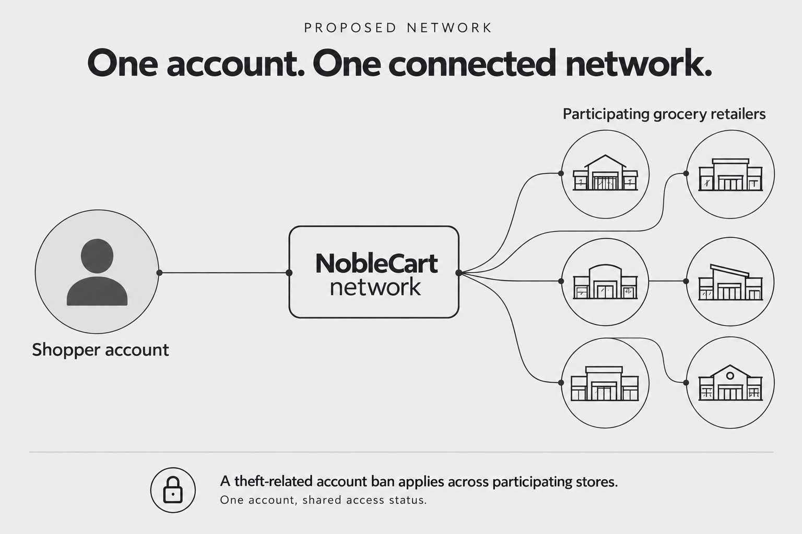
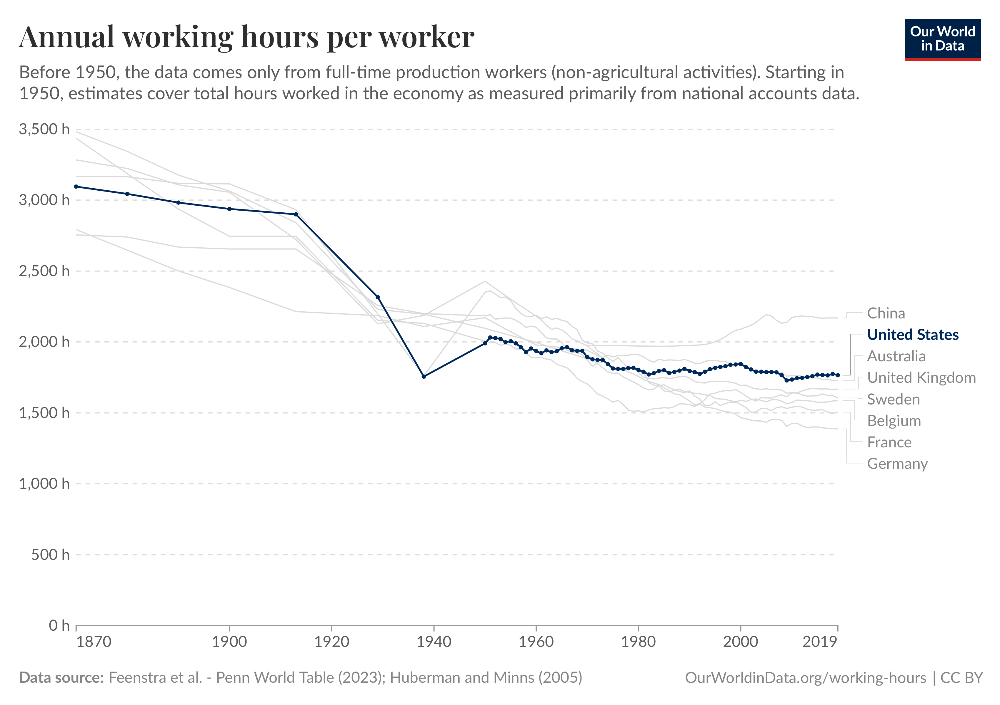

Zero friction for grocery shopping, and fully automated grocery stores built for maximum profitability.
Idea
NobleCart is an integrated system for shoppers and a partner for grocery retailers of every size across America. This document shares the idea behind NobleCart. It is not the full plan of how we will get there.
What Shoppers Get
Smart cart. They will just walk in get one of the carts with a NobleCart module mounted on top and scan items into it as they shop.
Cabinet. Cabinet is the to-buy list. Shoppers add their own items, and NobleCart adds suggestions based on their buying habits. Suggested items are tagged so shoppers can tell them apart.
Easy item search. Shoppers search for an item and see where it is. Stores will update their aisle signs to a simple grid like A1, B1, and so on, matching the cart screen, so items are easy to find.
Fast checkout. Shoppers walk to the front of the store with no waiting. See "How Checkout Works" below.
The NobleCart app. The app is the central place for shopping, and it is privacy first:
- Receipts are saved in the app, on the shopper's device.
- Shoppers can see purchases from any store and their weekly and monthly spending per store.
- To compare prices, NobleCart temporarily shares the needed data to the cloud, then deletes it, even though the shopper is signed in.
- If another store sells an item for less, NobleCart tells the shopper, shoppers decides what to buy and where.
Product info InFuture. NobleCart shows helpful product details and warnings, such as allergens. Health settings will connect with the shopper's onboard AI or any health app they already use.
How Checkout Works
- One to two employees quickly look over each cart and approve checkout.
- Cameras match the cart scan to what is really in the cart and approve checkout automatically.
- In Future: No employees are needed for checkout. All employees focus on stocking.
Business Automation
- No counter checkouts: NobleCart removes the need for them.
- Smarter inventory: Stocking software is simpler, and restocking is efficient through 3D models of the store and accurate inventory tracking.
- Labor: Employees focus on restocking and receiving inventory. In the future, robotics will automate that too, so the whole store flow is automated.
- Less theft: Every shopper has an account, so theft is traceable. Less theft means fewer lost items. Together with fewer staff, this means lower costs and more revenue.
- R&D: The NobleCart team handles all R&D, so stores don't need to.
- Continuous improvement: The system keeps improving itself, making the flow more accurate, faster, and cheaper.

Theft Today
First Flight
Stages
Stage One
- NobleCart is installed on a first group of carts in participating stores.
- Customers sign up, shop, and check out with the new flow.
- Businesses get improved inventory setup and management: cart tracking, real-time inventory updates, easy returns, and restocking as soon as an item hits its threshold.
Stage Two
- Feedback from users improves the app and cart screen.
- The improved 2.0 module and software are released, with features like multi-language support in the app and on the cart.
- NobleCart is added to all carts in the store.
Stage Three
- Camera-based theft detection checks images of carts and products for unscanned items.
- After a proven track record, camera AI replaces human approval.
- Shopping suggestions become more accurate.
- All labor moves to stocking, lowering costs and bringing savings.
NobleCart Pricing
Abundance
NobleCart will automate the whole store: shipping, delivery, receiving, organizing, and tracking; stocking and restocking; maintaining and cleaning; and selling. This allows grocery stores to run at a high profit margin.

More profit leads to lower prices, and lower prices lead to higher demand.
Our mission is to help our partners earn the most profit possible while shoppers get the best-quality products, with ease, at affordable prices. We believe automation will make this happen.
FineAscent will make sure action and effectiveness are at their peak.
Note
This document shares the idea behind NobleCart System. It is not the full plan of how we will do it.